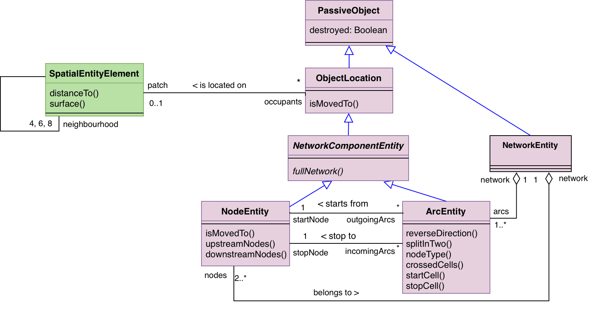
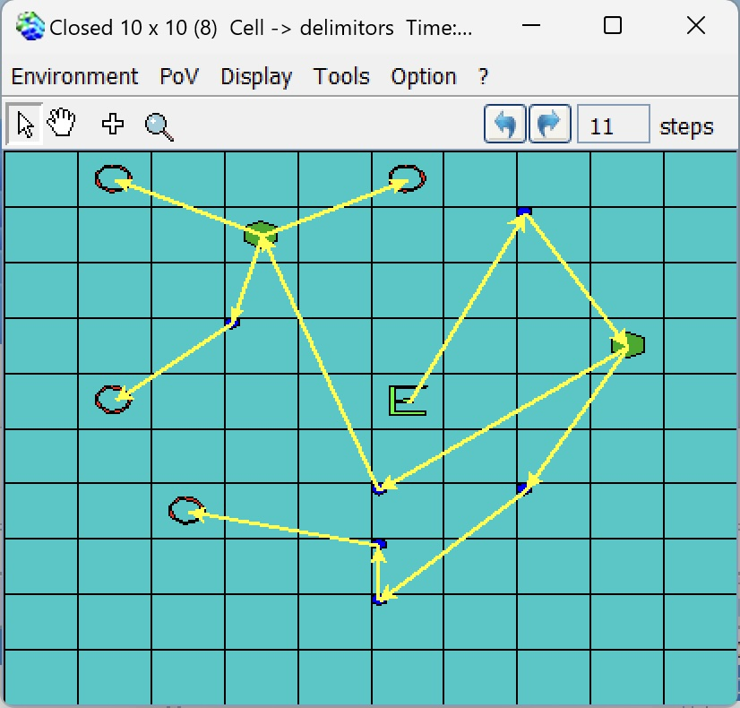

|
Demo_ArcsNodes
A simple example model that creates a network of Arcs
and Nodes spatialy located on the grid
Demo_ArcsNodes is a didactic model that allows you to
create Arcs, Nodes and oriented Networks in Cormas. It
specializes:
- ArcEntity which has 2 nodes: 'startNode' and
'stopNode'.
- NodeEntity which has 2 lists of :
'incomingArcs' and 'outgoingArcs'.
Any Arc and Node belong to Network. They are able
to know the downstreamWays and upstreamWays.

UML class diag of Demo_ArcsNodes.
In Demo_ArcsNodes, 3 entities are defined: Cell
(subclass of SpatialEntityElement), Arc (subclass
of ArcEntity) and Node (subclass of NodeEntity).
The #stepNewMoveDestroy: t method creates 2 nodes, move
one node and destroy one at each time step. Because
#replaceNodeWhileMoving is set to True, the nodes merge
when they are located on the same cell. Each Node is able
to know if it is an Entry node ('E') of the network, an
Output node ('O') or a small or big node of its networks:

- You can download the model (zip, 32 ko,
Cormas 2017).
- Contact the autor.
|
|